UNIT 07
第七单元
一首歌，一幅画，一件小工艺品……一段美好的艺术之旅。
学习目标
- 借助语言文字展开想象，体会艺术之美。
- 写自己的拿手好戏，把重点部分写具体。
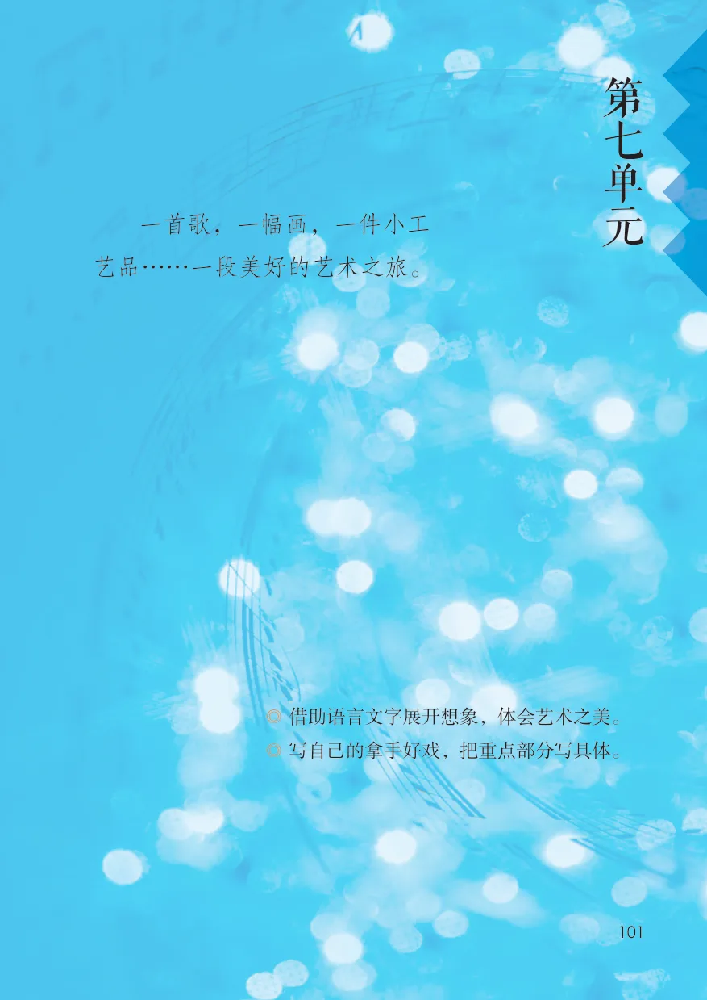
单元导语 · 教材第 101 页
单元导语与学习目标
教材第 101 页
查看原页第
七
一首歌，一幅画，一件小工单
艺品……一段美好的艺术之旅。 元
◎ 借助语言文字展开想象，体会艺术之美。
◎ 写自己的拿手好戏，把重点部分写具体。
文言文 · 教材第 102–104 页
22 文言文二则
伯牙鼓琴 · 书戴嵩画牛
22 文言文二则
伯牙鼓琴①
伯牙鼓琴，锺子期听之。方鼓琴而志 ②在太山 ③，锺子期曰：
“善哉 ④乎鼓琴，巍巍乎若太山 ⑤。”少选 ⑥之间而志在流水，锺子期
又曰：“善哉乎鼓琴，汤汤乎若流水 ⑦。”锺子期死，伯牙破琴绝弦，
终身不复鼓琴，以为世无足复为鼓琴者 ⑧。
注释
① 本文选自《吕氏春秋·本味》。鼓，弹。 ⑥ 〔少选〕一会儿，不久。
② 〔志〕心志，情志。 ⑦ 〔汤汤乎若流水〕像流水一样浩荡。
③ 〔太山〕泛指大山、高山。一说指东岳汤汤，水流大而急的样子。
泰山。 ⑧ 〔以为世无足复为鼓琴者〕认为世上再没有
④ 〔善哉〕好啊。 值得他为之弹琴的人了。
⑤ 〔巍巍乎若太山〕像大山一样高峻。
巍巍，高大的样子。若，像。
书戴嵩画牛①
蜀中有杜处士 ②，好书画，所宝 ③以百数。有戴嵩《牛》④ 一
轴，尤所爱，锦囊玉轴⑤，常以自随。
一日曝书画，有一牧童见之，拊掌 ⑥大笑，曰：“此画斗牛也。
牛斗，力在角，尾搐 ⑦入两股 ⑧间，今乃 ⑨掉 ⑩尾而斗，谬矣。”处士
笑而然之。古语有云：“耕当问奴，织当问婢。”不可改也。
注释
① 本文作者是宋代的苏轼。戴嵩，唐代 ⑥ 〔拊掌〕拍手。
画家。 ⑦ 〔搐〕抽缩。
② 〔处士〕本指有德才而不愿去做官的人， ⑧ 〔股〕大腿。
后来也指未做官的士人。 ⑨ 〔乃〕却。
③ 〔所宝〕所珍藏的（书画）。 ⑩ 〔掉〕摆动，摇。
④ 〔《牛》〕指戴嵩画的 《斗牛图》。 〔然之〕认为他说得对。
⑤ 〔锦囊玉轴〕用锦缎作画囊，用玉作画轴。
教材第 104 页
查看原页哉巍弦锦曝矣
正确、流利地朗读课文。背诵《伯牙鼓琴》。
“伯牙破琴绝弦，终身不复鼓琴，以为世无足复为鼓琴者。”说说这句话的
意思，再结合“资料袋”和同学交流感受。
用自己的话讲讲《书戴嵩画牛》的故事。
资料袋
伯牙、锺子期相传为春秋时期人，关于他们二人成为知音的传
说，《吕氏春秋》《列子》等古书均有记载，也流传于民间。由于这
个传说，人们把真正了解自己的人叫作“知音”，用“高山流水”
比喻知音难觅或乐曲高妙。
我国古诗常提及伯牙、锺子期的传说，如：
锺期一见知，山水千秋闻。 —孟浩然《示孟郊》
锺期久已没，世上无知音。 —李白《月夜听卢子顺弹琴》
故人舍我归黄壤，流水高山心自知。 —王安石《伯牙》
课文 · 教材第 105–106 页
23 月光曲
教材第 105 页
查看原页23月光曲
两百多年前，德国有个音乐家叫贝多芬，他谱写了许多著名的乐曲。其中有一首著名的钢琴曲叫《月光曲》①，传说是这样谱成的。
有一年秋天，贝多芬去各地旅行演出，来到莱茵河边的一个小镇上。一天夜晚，他在幽静的小路上散步，听到断断续续的钢琴声从一所茅屋里传出来，弹的正是他的曲子。
贝多芬走近茅屋，琴声忽然停了，屋子里有人在谈话。一个姑娘说：“这首曲子多难弹哪！我只听别人弹过几遍，总是记不住该怎样弹，要是能听一听贝多芬自己是怎样弹的，那有多好哇！”一个男的说：“是啊，可是音乐会的入场券太贵了，咱们又太穷。”姑娘说：
“哥哥，你别难过，我不过随便说说罢了。”贝多芬听到这里，推开门，轻轻地走了进去。茅屋里点着一支蜡烛。在微弱的烛光下，男的正在做皮鞋。窗前有架旧钢琴，前面坐着一个十六七岁的姑娘，脸很清秀，可是眼睛失明了。
皮鞋匠看见进来个陌生人，站起来问：“先生，您找谁？走错门了吧？”贝多芬说：“不，我是来弹一首曲子给这位姑娘听的。”
姑娘连忙站起来让座。贝多芬坐在钢琴前面，弹起盲姑娘刚才弹的那首曲子。盲姑娘听得入了神，一曲弹完，她激动地说：“弹得多纯熟哇！感情多深哪！您，您就是贝多芬先生吧？”
本文根据有关材料改写。
①〔《月光曲》〕这里指贝多芬 《第十四号钢琴奏鸣曲》，又名 《月光奏鸣曲》，作于1801年。
教材第 106 页
查看原页贝多芬没有回答，他问盲姑娘：“您爱听吗？我再给您弹一首吧。”一阵风把蜡烛吹灭了。月光照进窗子，茅屋里的一切好像披上了银纱，显得格外清幽。贝多芬望了望站在他身旁的兄妹俩，借着清幽的月光，按起了琴键。
皮鞋匠静静地听着。他好像面对着大海，月亮正从水天相接的地方升起来。微波粼粼的海面上，霎时间洒满了银光。月亮越升越高，穿过一缕一缕轻纱似的微云。忽然，海面上刮起了大风，卷起了巨浪。被月光照得雪亮的浪花，一个连一个朝着岸边涌过来……皮鞋匠看看妹妹，月光正照在她那恬静的脸上，照着她睁得大大的眼睛。她仿佛也看到了，看到了她从来没有看到过的景象—月光照耀下的波涛汹涌的大海。
兄妹俩被美妙的琴声陶醉了。等他们醒过神来，贝多芬早已离开了茅屋。他飞奔回客店，花了一夜工夫，把刚才弹的曲子—《月光曲》记录了下来。
谱莱茵盲纯键缕陶有感情地朗读课文。说说贝多芬为什么弹琴给盲姑娘听，为什么弹完一曲又弹一曲。反复朗读第9自然段，想象描绘的画面，感受乐曲的美妙，再背诵下来。
选做听一听自己喜爱的音乐，展开联想和想象，把想到的情景写下来。
课文 · 教材第 107–108 页
24* 京剧趣谈
略读课文
教材第 107 页
查看原页24 * 京剧趣谈提起京剧，你的脑海中也许会浮现出丰富多彩的京剧脸谱。如果你细细欣赏京剧，还会发现其中的许多奥秘。默读课文，说说你对京剧有了哪些了解。课后，有兴趣的同学可以看看京剧，并和同学交流。
马鞭中国古人时常要骑马。可骑马在舞台上没办法表现，舞台方圆太小，马匹是无法驰骋的。真马出现在舞台上，演员也怕它失去控制。京剧继承、发展了中国传统戏曲的表现手段，终于战胜了这种尴尬gS—用一根小小的马鞭就彻底解决了，而且解决得无比漂亮。这种表演方式十分符合中国的美学。巨大的马匹被整个省略，但骑马人那种特定和优美的姿态却鲜明地显现出来。同时这一根虚拟的马鞭①，给演员以无穷无尽的表演自由：可以高扬，可以低垂；可以跑半天还
在家门口，可以一抬手就走了一百里。马鞭本身具备一种装饰的美，而且不同人物在使用马鞭时，也各自形成了一套约定俗成的方法。
马鞭是实在的道具，是可感觉可使用的。京剧还有一些虚拟的道具，但一样可感觉可使用。比如《拾玉镯》中小姑娘纳鞋底，鞋底是实的，针线可是虚的，但在演员手里，“无”远远胜过了“有”。
再比如宴席上的酒壶酒杯。主人一声吩咐“酒宴摆下—”，本文作者徐城北，选作课文时有改动。
①〔虚拟的马鞭〕以鞭代马、以桨代船是京剧表演艺术中的常用表现手段，可以为演员的表演不受时间、空间的限制提供条件。
教材第 108 页
查看原页仆人立刻把酒壶酒杯端上舞台。主人和客人举杯喝酒，一杯又一杯，但就是不见吃饭吃菜，可客人也一样“饱”了。京剧一般是不把饭碗搬上舞台的，一旦真用，那就得“狠狠做戏”。比如《金玉奴》中有一个细节，小生演员用饭碗喝完豆汁，又用嘴去舔筷子，如果没有这一“舔”，那饭碗也就完全不必拿上舞台。
亮相京剧还有一种奇特之处：双方正在对打，激烈到简直是风雨不透，台下看的人非常紧张，一个个大气儿不敢出，都把眼睛睁得大大的，唯恐在一眨眼间，谁就把对方给“杀”了。然而也怪，就在双方打得不可开交之际，那紧张而又整齐的锣鼓声忽然一停，人物的动作也戛然而止—双方脸对着脸，眼睛对着眼睛，兵器对着兵器，一切都像被某种定身术给制服了！小孩子和外宾忍不住要问：
“如果他们当中哪个先‘醒’了，拿起兵器朝着对方一刺，对方不就‘完’了吗？”问得有理，但这恰恰是京剧艺术的高妙之处。俗话说“一动不如一静”，古诗也说“此时无声胜有声”，讲的就是这种情况。静，越发能显示武艺的高强，越发能显示必胜的信心。
还有一种“刀（枪）下场”，可以视为动态的亮相。双方正在交战，一方被打败，跑下去了。可胜利一方不紧追，反而留在原地，抡圆了胳膊把手中的兵器（刀或枪）耍了个风雨不透。这，哪里还是戏剧？这，不是太像杂技了吗？您说得太对了，这就是京剧中的杂技成分，自古如此，如今还保留着。它的存在，就是为了突显人物的英雄气概。
口语交际 · 教材第 109 页
口语交际：聊聊书法
教材第 109 页
查看原页口语交际
聊聊书法书法是我们的国粹，散发着艺术的魅力，受到人们的喜爱和珍视。今天，我们一起来聊聊书法吧！王羲之《兰亭集序》（冯承素摹本）
◇ 你知道我国古代哪些著名的书法家？你知道他们的哪些故事？
◇ 你参观过书法作品展览吗？你欣赏哪些人的作品？
◇ 你学习过书法吗？在这一过程中，有什么特别的感受？
◇ 你认为练习书法有什么益处？可以课前先搜集资料，作好准备。和同学交流的时候，表述要清楚。结合图片、实物，能让你的讲述更加生动。
◎ 有条理地表达，如分点说明。
◎ 对感兴趣的话题深入交谈。
习作 · 教材第 110 页
习作：我的拿手好戏
教材第 110 页
查看原页习作
我的拿手好戏
十八般武艺，样样是好戏！
◇ 跳舞，唱歌，画画，变魔术
◇ 剪纸，捏泥人，做标本，做航模
◇ 挑西瓜，做面包，炒拿手菜
◇ 吹口哨，玩魔方，钓鱼
……
你的拿手好戏是什么？写下来，和同学一起交流吧！写之前想一想：
◇ 你的拿手好戏是怎样练成的？关于拿手好戏，有哪些想要分享的故事？
◇ 怎样写你的拿手好戏？哪些内容先写？哪些内容后写？
◇ 哪些内容作为重点部分？哪些内容可以写得简略一些？
可以仿照下面的例子列一个提纲。
点明拿手好戏是挑
西瓜。
简单介绍：是怎样我用“看、拍、听”
《三招挑西瓜》 练成挑西瓜的拿手三招，自信地挑了两
好戏的。 个大西瓜。
具体写：周末和同第一个西瓜很好，得
学郊游时挑西瓜、 到同学的夸赞，我很
吃西瓜的趣事。 得意。
第二个西瓜没熟，我
很尴尬—拿手好戏
演砸啦！
写完后读一读，看看是否通顺，重点部分是不是写具体了，再改一改。
语文园地 · 教材第 111–112 页
语文园地
语文园地
交流平台
俗话说，好记性不如烂笔头。做课堂笔记，是一个非常好的学习习惯，不
仅能帮助我们记忆，还能促使我们积极思考。
我在课堂笔记本
上，记录了老师讲的
7 开国大典重要内容。
群众入场—典礼开始—宣布新中国成立—升国旗—宣读公告—
阅兵盛况—群众游行
有了疑问，需要继续思
考，或者查找资料的，我会
认真记下来。
23 月光曲
1. 传说是这样谱成的。 “传说”？看来这首曲子的创作过
程不一定是这样。查资料了解一下。
2. 您就是贝多芬先生吧？ 盲姑娘听琴声猜出了贝多芬，
这是说贝多芬遇到了知音吧？
我会把听课
过程中产生的想
词句段运用法记录下来。
日常生活中使用的一些词语与戏曲有关。读一读下面的词语，和同学交流
它们的意思，再选一两个说句子。
亮相行当压轴行头
跑龙套唱白脸花架子对台戏
粉墨登场字正腔圆有板有眼科班出身
教材第 112 页
查看原页一位同学根据下面的说明书，做成了图中的小台灯。小台灯有一处做错
了，跟说明书写得不够清楚有关系。读读说明书，把写得不清楚的地方画
出来，再改一改。
玩具小台灯制作说明书
材料：
半个乒乓球，一个瓶盖，一段铅丝，一块橡皮泥。
做法：
1. 在半个乒乓球中间钻个小洞，当灯罩。
2. 在瓶盖中间钻个小洞，从洞中穿进铅丝，铅丝
一端弯一点儿，钩住盖底。在靠近洞的盖面和
盖底处用橡皮泥把铅丝粘牢。
3. 把铅丝的另一端插入乒乓球的小洞里。把洞的两
边粘牢。铅丝的头上用橡皮泥做一个小灯泡。
日积月累
高山流水天籁之音余音绕梁黄钟大吕
轻歌曼舞行云流水巧夺天工惟妙惟肖
画龙点睛笔走龙蛇妙笔生花栩栩如生
SOURCE PAGES
原书页面与插图
按课文和栏目分组，完整保留本单元全部原书页面。点击可查看大图。
单元导语与学习目标
22 文言文二则
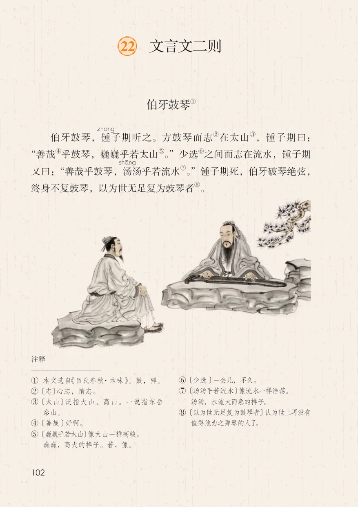
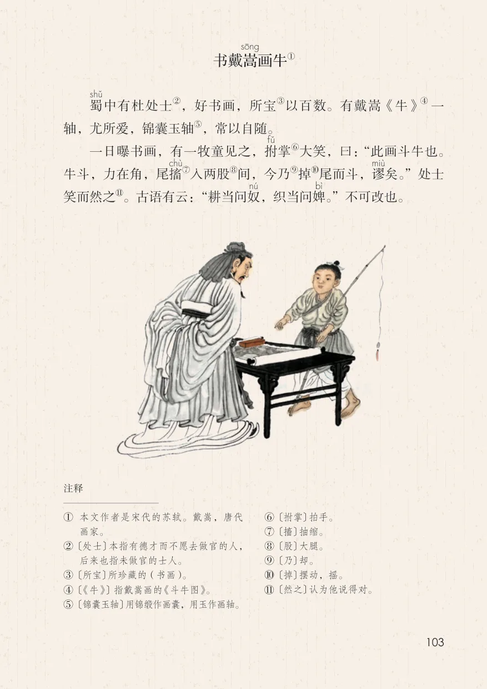
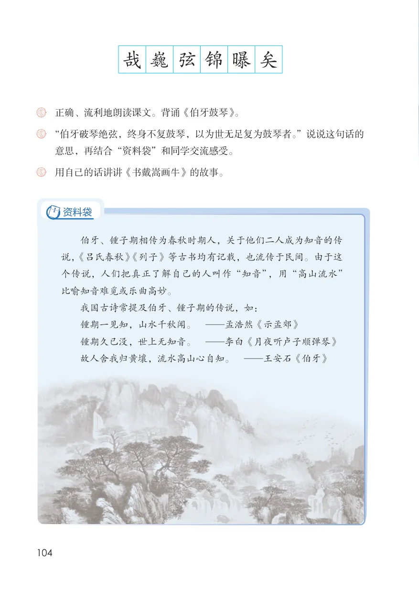
23 月光曲
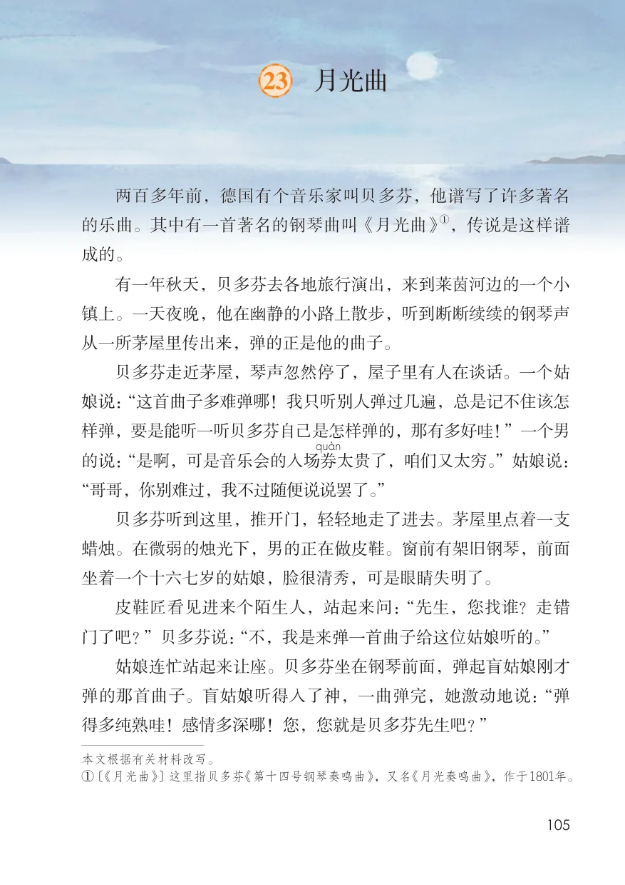
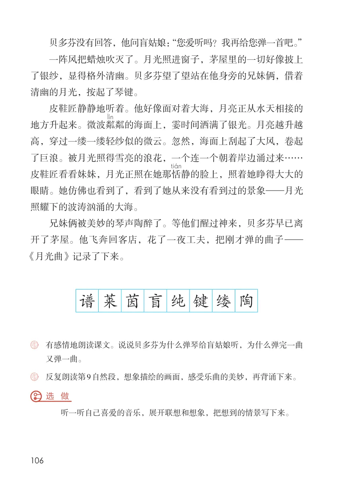
24* 京剧趣谈
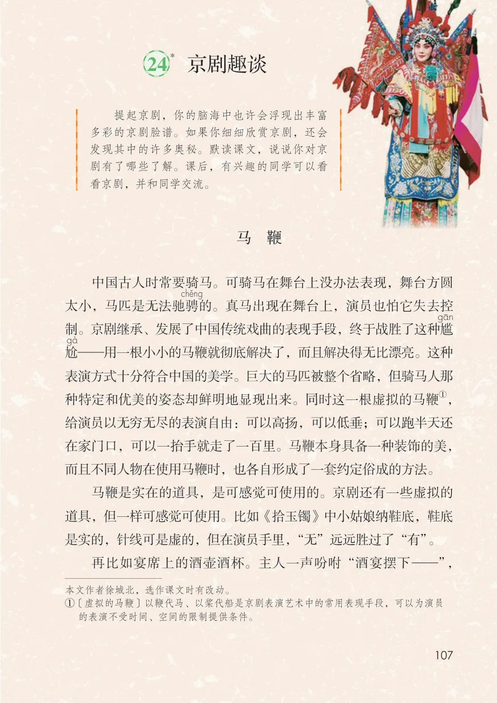
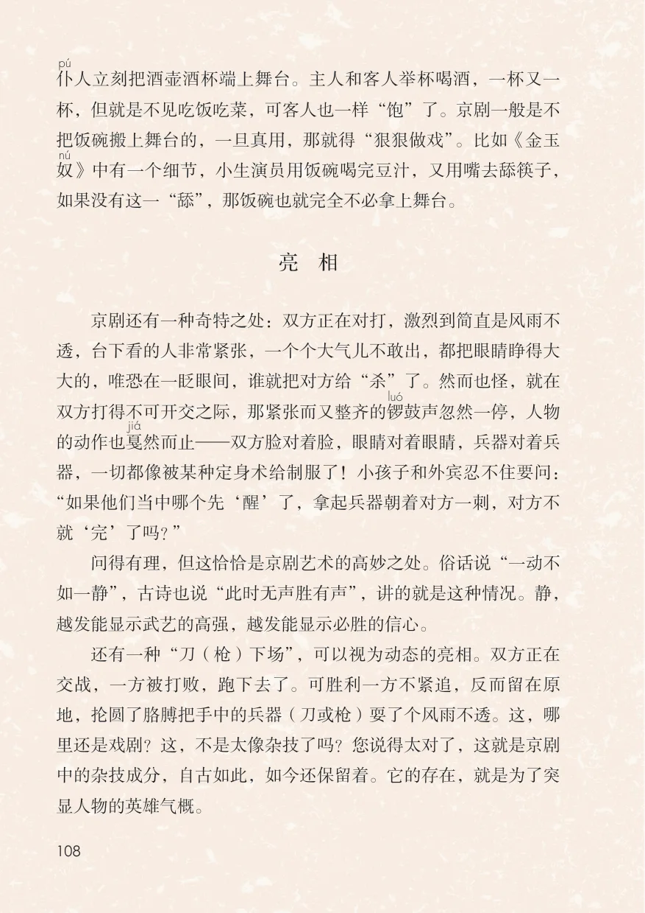
口语交际：聊聊书法
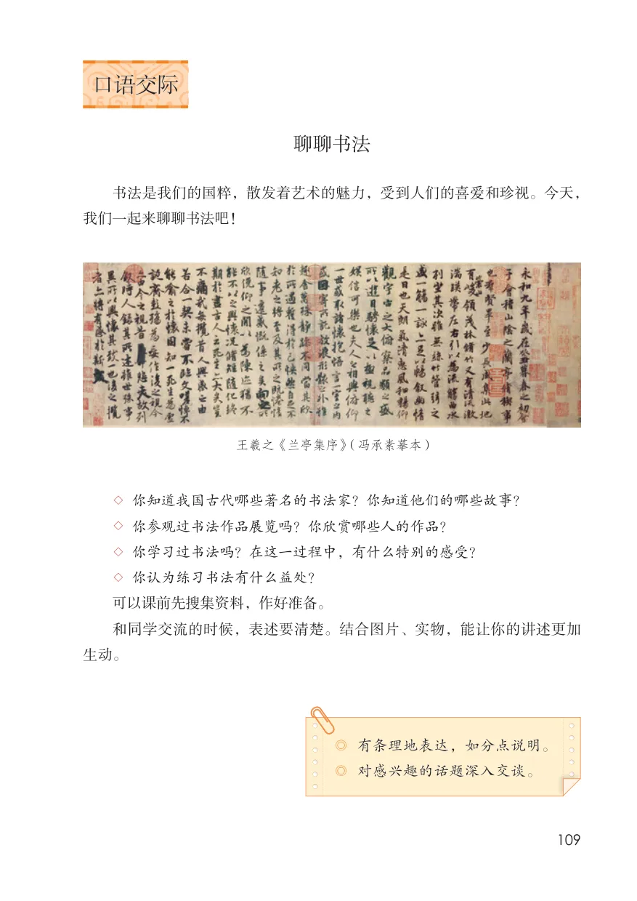
习作：我的拿手好戏
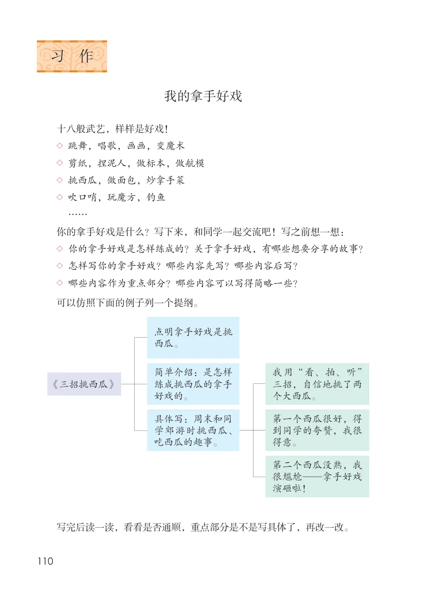
语文园地
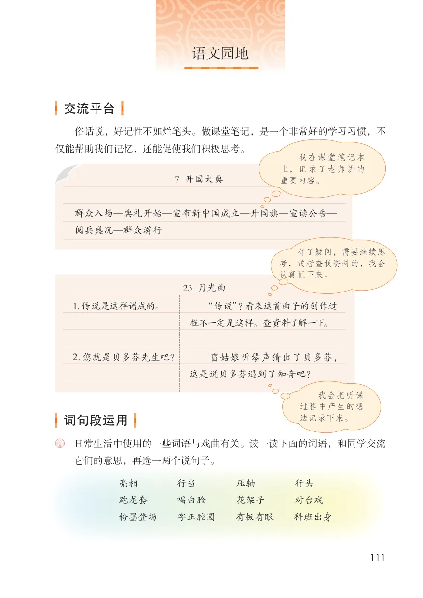
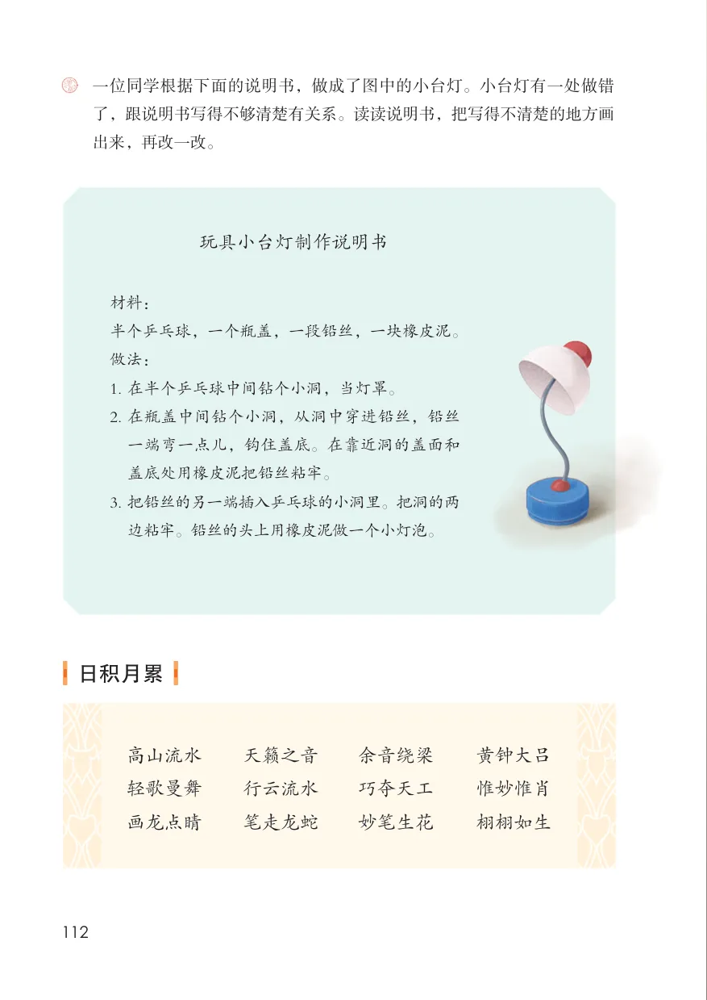